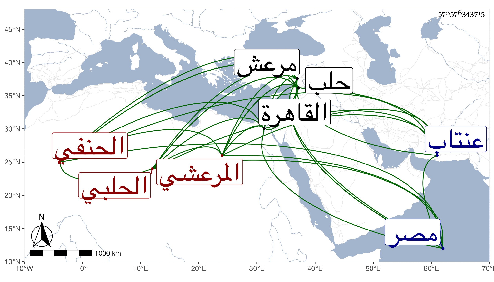

0902Sakhawi.DawLamic.ITO20230111-ara1.EIS1600.570576343715
Biography ID: 570576343715
أحمد بن أبي بكر بن صالح بن عمر الشهاب أبو الفضائل المرعشي ثم الحلبي الحنفي خال الشمس بن أجا . ولد في سنة ست وثمانين وسبعمائة بمرعش من البلاد الحلبية وقرأ بها القرآن وبعض المختصرات واشتغل يسيرا ثم تحول منها إلى عنتاب في سنة أربع وثمانمائة فتفقه بها عل عالمها عيسى ثم إلى حلب في سنة ست عشرة فقطنها وبحث الكشاف وشرح المفتاح على الزين عمر البلخي والمغني في الأصول وغيره على البدر بن سلامة مع قراءة الصحيحين عليه وتقدم في الفقه وأصوله والعربية وشارك في فنون وأذن له غير واحد في الإفتاء والإلقاء وتصدر من سنة عشرين بحلب فانتفع الناس به وقدم القاهرة غير مرة وصار عالم حلب وفقيهها ومفتيها وعرض عليه الظاهر جقمق قضاءها فتنزه عنه مع تقلله . وصنف كنوز الفقه ونظم العمدة للنسفي في أصول الدين وزاد عليها أشياء وكذا نظم الكنز وخمس البردة ، أجاز في بعض الاستدعاآت ولقيه العز بن فهد وقد اسن فكتب عنه تخميس البردة وأخذ عنه الشمس بن المغربي المقري أخو قاضي الحنفية بمصر وكذا الشيخ عبد القادر الأبار . ومات عقب ابن فهد بيسير في سنة اثنتين وسبعين ومن نظمه :
| ولما رأينا عالما بجواهر | خدمناه بالعقد المنظم من در |
| على رأي من يروي من الشعر حكمة | خلافا لمن قال القريض بنا يزري |
ومدحه بعضهم بقوله :
| عن العلماء يسألني خليلي | ألا قل لي فمن أهدى وأرشد |
| ومن أحمدهم فعلا وفضلا | فقلت المرعشي الشيخ أحمد |
